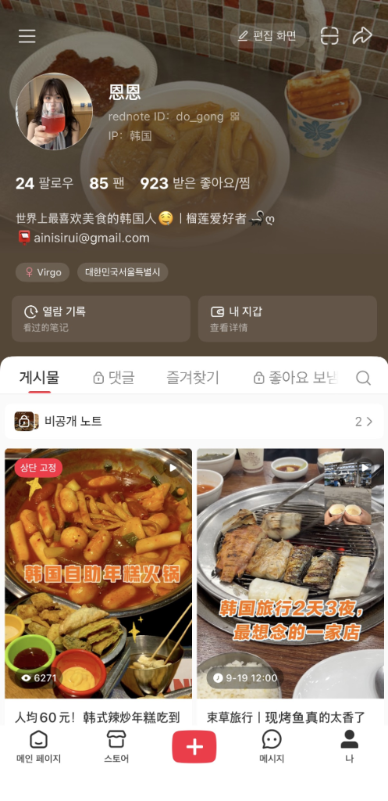
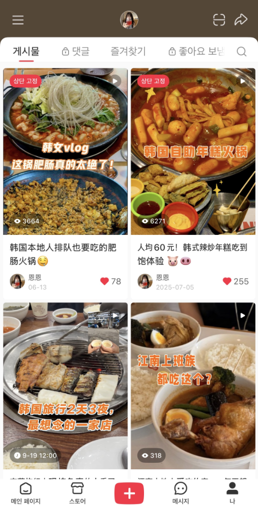
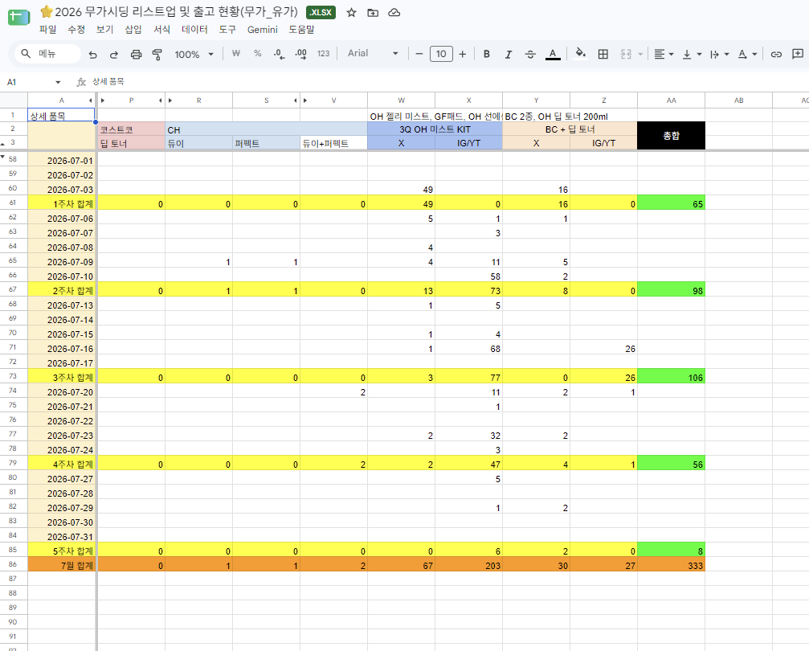
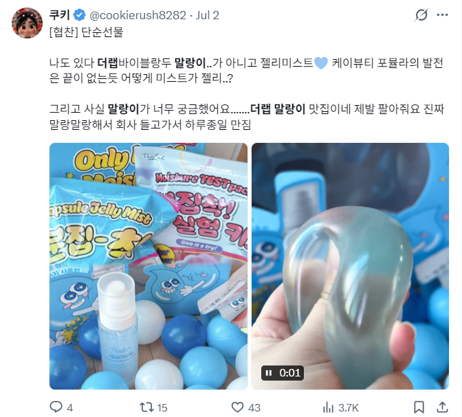
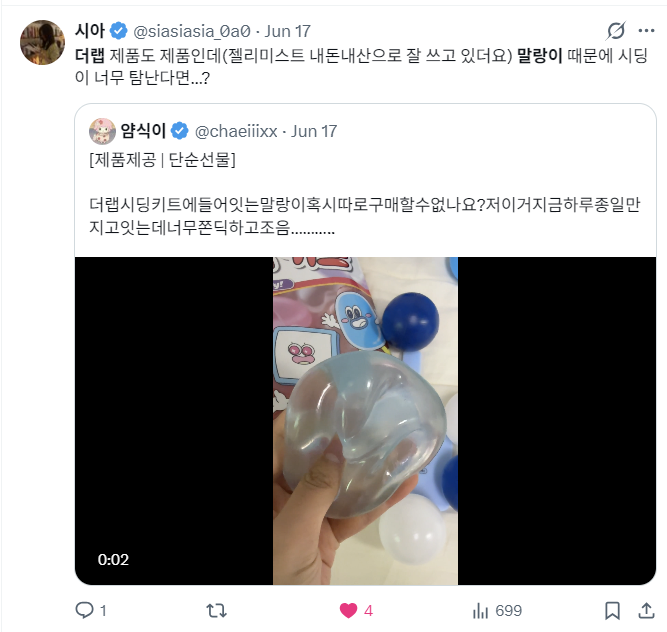
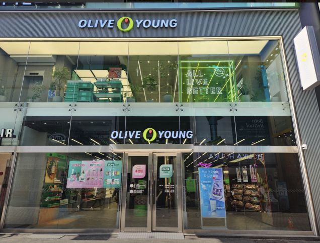
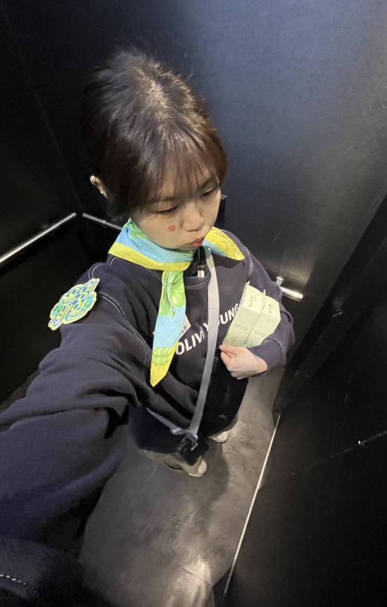

데이터 기반의 콘텐츠 기획과 전략적인 커뮤니티 및 인플루언서 운영으로 브랜드의 확실한 팬덤을 구축합니다.
View Projects ➔저는 쑤저우 교환학생과 샤홍슈 채널 직접 운영을 통해 온라인 콘텐츠 문법을 치열하게 훈련했습니다. 이후 올리브영 현장에서 소비 패턴을 직접 관찰하며, '온라인 트렌드가 실제 오프라인 구매로 이어지는' 마케팅의 흐름을 체득했습니다. 또한 다채널 바이럴 및 대규모 시딩 운영을 통해 커뮤니티 파급력을 만드는 방법을 알고 있습니다.
국내 뷰티 크리에이터 60인 매니징 및 기획 의도 디테일 검수
총 3,328명 규모 시딩 공동 관리 및 본인 주도 1,664건 출고 운영
외국인 관광객 세일즈 및 트렌드 기반 오프라인 구매 패턴 분석
중국 Z세대 플랫폼 특성 연구 및 위챗 O2O 프로모션 기획
현지 어학연수 및 글로벌 문화/언어 심층 이해
타깃 플랫폼에 대한 실무적 이해도와 채널 기획력이 필요한 상황
현지 트렌드를 반영한 푸드 컨셉의 샤홍슈 숏폼 콘텐츠를 기획 및 운영해 누적 3.5만 뷰와 700개 이상의 좋아요를 달성하며 성공적인 채널 기획력을 입증했습니다.
교환학생 당시에는 위챗 홍보와 QR 유입 전략을 통해 단 3일 만에 15명의 실제 오프라인 행사 참여를 이끌어내며 플랫폼 활용 능력을 증명했습니다.


대규모 인플루언서 풀 구축과 동시에 고효율 핵심 인플루언서와의 밀도 있는 콘텐츠 기획 필요
동료와 협업하여 약 1만 명 규모의 뷰티 인플루언서 풀(Pool)을 리스트업 및 관리하며, 타겟에 맞는 최적의 인물을 발굴하는 업무 효율성을 길렀습니다.
이와 별도로 선정된 핵심 뷰티 크리에이터 60여 명과는 영상 기획부터 프레임 단위의 디테일 검수까지 심도 있게 협업하여 스케줄 지연 없이 프로젝트를 리드했습니다.

대가성 없는 무가 시딩에서 자발적인 리뷰 업로드를 이끌어낼 후킹 포인트 필요
유저 반응을 유도하기 위해 시딩 키트에 인플루언서들의 취향을 저격할 '말랑이' 굿즈를 기획했습니다. 40곳 이상의 판매처를 리스트업하고 직접 샘플링하여 최적의 퀄리티로 소싱했습니다.
귀여운 구성품이 유행처럼 번지며 자발적 인증샷이 이어졌고, 총 197건의 출고 대비 오가닉 업로드 72건을 기록해 목표 노출률(30%)을 초과한 36.5%를 달성했습니다.


자사 채널을 넘어 코어 타깃이 밀집된 외부 커뮤니티에 브랜드 긍정 여론 형성
브랜드의 핏에 맞는 커뮤니티를 발굴해 카페 체험단을 직접 기획 및 운영했습니다. 유저들이 자발적으로 정성스러운 리뷰(UGC)를 남길 수 있도록 미션 가이드를 세심하게 설계하여 자연스러운 입소문을 견인했습니다.
또한 팀 내 기획 방향에 맞춰 '의사 추천' 등 신뢰도를 높이는 코어 키워드를 활용해, 트위터, 주요 뷰티 카페 커뮤니티, 파워페이지 등 매체 특성에 맞춘 대행사 바이럴을 조율 및 실행하여 오가닉 트래픽을 증대시켰습니다.
소비자의 오프라인 구매 패턴과 온라인 채널의 상관관계 파악
올리브영 명동점에서 근무하며 외국인 관광객 밀착 응대로 실제 오프라인 현장에서 일어나는 구매 여정을 분석했습니다.
특히 주요 커뮤니티나 플랫폼에서 입소문 난 제품이 매대 매출로 직결되는 현상을 확인하며, 온라인 바이럴과 오프라인 세일즈의 연결고리를 이해하는 실무 감각을 키웠습니다.

